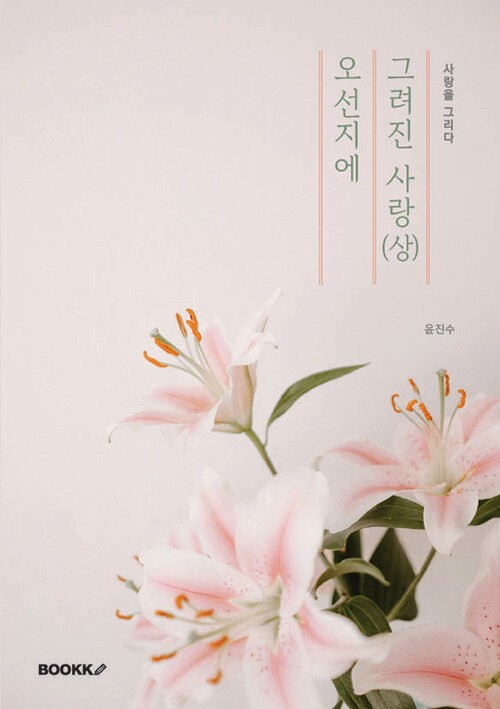
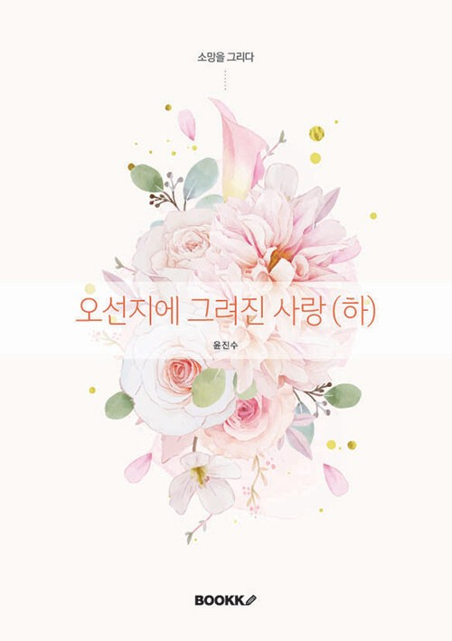
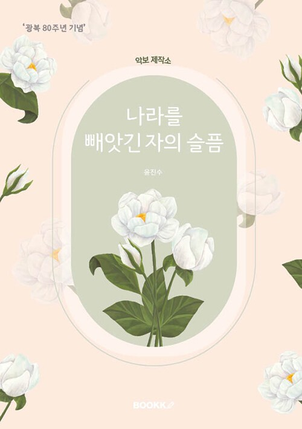

Novelist
미스터윤
윤진수 · 카카오 브런치 연재 작가
2024년부터 카카오 브런치를 통해 연재해 온 이야기들이 세 편의 소설로 세상에 나왔습니다. 교보문고 · 영풍문고 · 알라딘 · 예스24에서 만나보실 수 있습니다.
Scroll



2024년부터 카카오 브런치를 통해 연재해 온 이야기들이 세 편의 소설로 세상에 나왔습니다. 교보문고 · 영풍문고 · 알라딘 · 예스24에서 만나보실 수 있습니다.
윤진수(b.1975)는 한양대학교 전자공학과를 졸업하고 LG전자에서 근무했다. 2023년 홍익대학교 미술대학원 회화과를 졸업한 후, 국내외에서 활발한 작품활동과 개인전시회를 통해 독창적인 추상회화 작품을 소개하고 있다.
2024년부터 피아노 연주자로 활동을 시작했고, 2025년 결성한 MoCA 트리오를 통해 대전예술가의 집에서 첼로·바이올린 연주자들과 함께 공연하며 아마추어 음악인으로도 알려지기 시작했다.
'미스터윤'이라는 필명으로 작가 활동을 시작한 그가 집필한 소설로는 《오선지에 그려진 사랑》, 《악보제작소》, 《조선애국단》 등이 있다. 최근에는 자전적 소설인 《영창의 피아노》를 연재하고 있다.
어린 시절 예술가의 꿈을 안고 외국에서 유학생으로 살아간 이민 1세대 주인공들이 겪는 사건으로 이야기는 시작된다. 혼전 임신과 출산으로 태어나 자라난 이민 2세대 주인공들의 성장 과정, 1세대 부모와의 갈등, 국적으로 인한 정체성 혼란을 음악과 미술이라는 예술적 소재로 풀어낸다. 좌절과 시련 속에서도 희망과 회복을 찾아가는 가족들에게 소망을 전하고자 쓴 작품이다.
대한제국 시기 군대가 해산되면서 일본군과 맞서 싸운 의병들의 항쟁을, 작가는 '악보'라는 독창적인 소재로 풀어낸다. 의병과 예술가가 함께 만든 '암호화된 악보'를 통해 일제 치하에서 살아간 예술가들의 애환을 그리며, 조선의 민족성을 말살하려 한 을사오적의 반민족 행위와 한일합병으로 이어지는 역사를 되짚는다. 광복 80주년을 기념해 집필한 이 작품을 통해 작가는 우리 역사에 대한 올바른 인식을 고취하고, 순국선열의 숭고한 희생정신을 널리 알리고자 했다.
《오선지에 그려진 사랑》(상/하), 《악보제작소》, 《운수 터져버린 날》 — 지금까지 출간된 세 종, 네 권의 소설이 서점에서 판매될 때마다 정가에서 부크크와 각 온라인서점의 유통 마진을 제외하고 작가에게 돌아오는 몫(판매가의 약 15% 수준)이 발생합니다. 미스터윤은 이 몫 전액을 장애인 보호시설인 암사재활원에 기부하고 있습니다.
2026년 6월 9일, 서울 강동구 암사재활원에서 기부 협약식을 가졌으며, 앞으로 새로 출간되는 소설의 판매 수익 역시 같은 방식으로 계속 기부할 계획입니다. 작가는 2013년부터 암사재활원을 정기적으로 방문하며 봉사활동을 이어오고 있습니다.